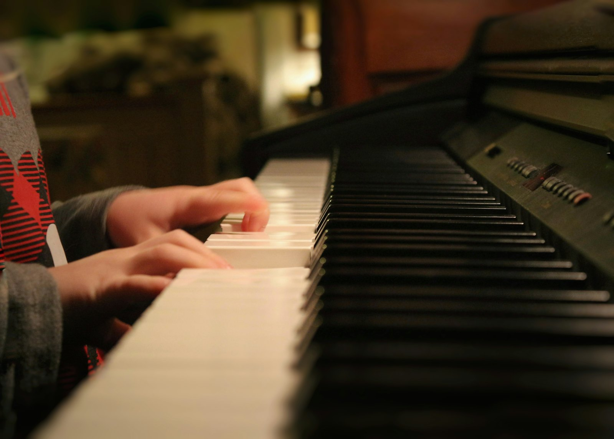
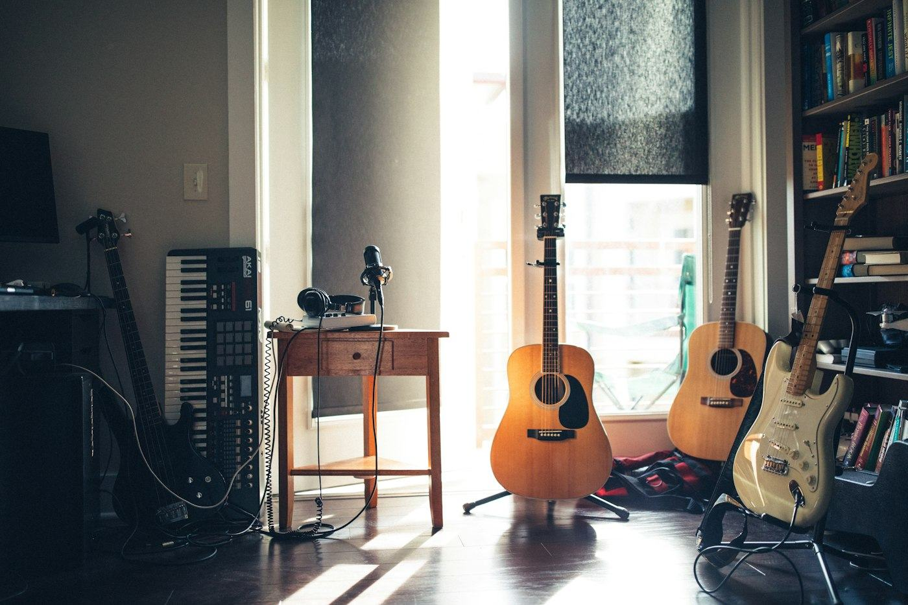
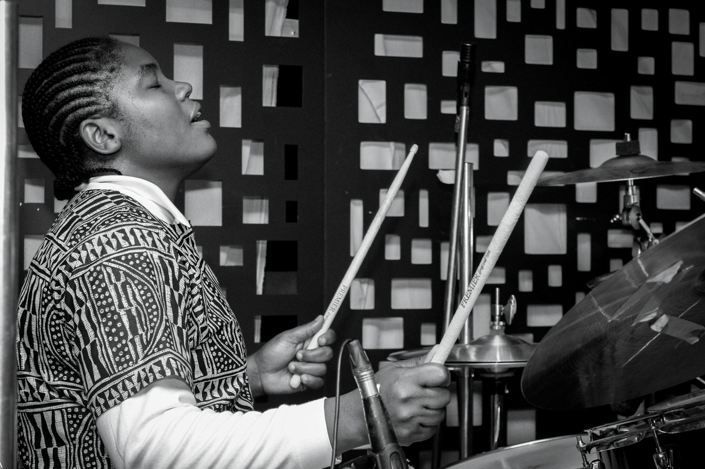
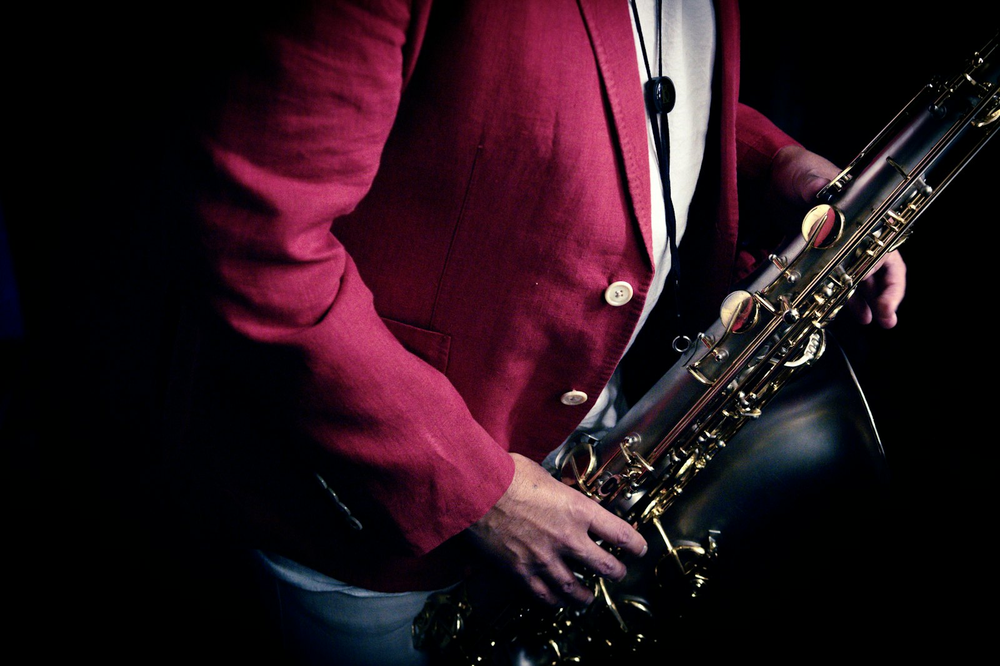
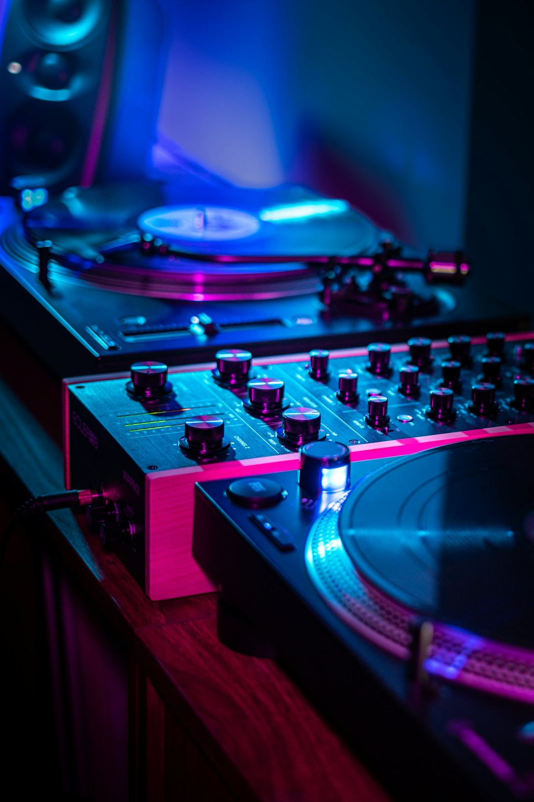

Les cours
Sept disciplines, enseignées par des musiciens, de l'éveil au niveau professionnel avec certificat.

Piano et clavier
L'instrument idéal pour comprendre la musique.
Au programme
- Lecture de notes et rythmes
- Accords et accompagnement
- Morceaux du répertoire africain et international

Guitare
Acoustique, électrique ou basse : de l'accord à la scène.
Au programme
- Accords et rythmiques
- Solos et improvisation
- Guitare d'église, rumba, afro-pop

Batterie et percussions
Le cœur du groupe : rythme, coordination et énergie.
Au programme
- Indépendance des mains et des pieds
- Grooves afro, gospel, rock
- Jeu en groupe

Saxophone
Le souffle, le son et le swing.
Au programme
- Respiration et embouchure
- Gammes et lecture
- Jazz, makossa, soul
Chant et coaching vocal
Placer sa voix, tenir la note, oser la scène.
Au programme
- Respiration et justesse
- Interprétation et présence
- Préparation aux concours et concerts

Chorale
Chanter ensemble, à plusieurs voix.
Au programme
- Harmonie et polyphonie
- Rôle du lead vocal
- Répertoire gospel et variété

Techniques du son
Enregistrer, mixer, sonoriser un concert.
Au programme
- Prise de son et micros
- Mixage et logiciels
- Sonorisation en live
Aller plus loin
Ateliers intensifs
Stages de chant, de chorale et de technique du son pendant les vacances.
Certificat
Les formations professionnelles se terminent par la remise d'un certificat.
Scène
Concerts d'élèves et prestations : jouer devant un public fait partie de l'apprentissage.
Ton premier cours t'attend.
Inscriptions ouvertes sur nos deux sites, de 6 ans à l'âge adulte.